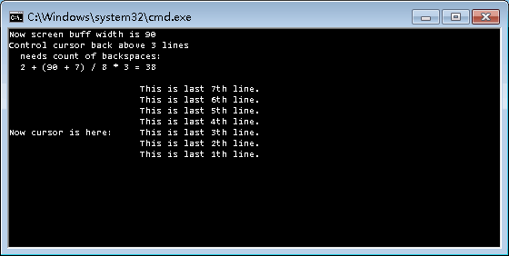
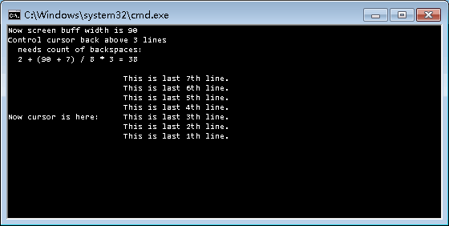

Search found 44 matches
- 02 Jun 2017 09:02
- Forum: DOS Batch Forum
- Topic: Reduced-Flicker in dos batch. It's possible?
- Replies: 29
- Views: 6250
Re: Reduced-Flicker in dos batch. It's possible?
I did a clock. This time I increased the display accuracy to one hundredth of a second. But I did not test the frame rate. I do not know how high its frame rate can be. Please replace the ★ in the code with TAB(ASCII 9) The frame rate of the GIF picture below is below the actual running frame rate o...
- 09 May 2017 07:36
- Forum: DOS Batch Forum
- Topic: fractal: Gosper curve
- Replies: 1
- Views: 554
fractal: Gosper curve
https://upload.wikimedia.org/wikipedia/commons/thumb/6/6e/Gosper_curve_3.svg/320px-Gosper_curve_3.svg.png @echo off & setlocal enableDelayedExpansion set "SIN=(t-t*t/1875*t/320000+t*t/1875*t/15625*t/16000*t/2560000-t*t/1875*t/15360*t/15625*t/15625*t/16000*t/44800000)" set "COS=(1...
- 17 Apr 2017 23:53
- Forum: DOS Batch Forum
- Topic: Fractal: Dragon curve
- Replies: 12
- Views: 2376
Re: Fractal: Dragon curve
@einstein1969 I did a test to achieve the purpose of the cursor feed back multiple lines. But I can not find a way to do cursor feed back and color output at the same time. @echo off mode 15 for /L %%i in (1 1 5) do echo;Line %%i REM The content of file @test is one TAB followed 10 BS, no other any ...
- 17 Apr 2017 01:54
- Forum: DOS Batch Forum
- Topic: Fractal: Dragon curve
- Replies: 12
- Views: 2376
Re: Fractal: Dragon curve
@Aacini, thank you for your attention and feedback. I wrote a version with simple algorithm explain. There is a good algorithm explain here: m My algorithmic description version is just for my batch implementation code. The first 9 turns curves and vectors results: TURN 1 vector_x=-1 vector_y=0 The ...
- 17 Apr 2017 01:48
- Forum: DOS Batch Forum
- Topic: Fractal: Dragon curve
- Replies: 12
- Views: 2376
Re: Fractal: Dragon curve
Thanks, Ed Dyreen
But Win7 and after systems seems to be no full-screen feature
But Win7 and after systems seems to be no full-screen feature
- 15 Apr 2017 03:04
- Forum: DOS Batch Forum
- Topic: Fractal: Dragon curve
- Replies: 12
- Views: 2376
Re: Fractal: Dragon curve
re: Sounak@9434
Thanks for your feedback!
Thanks for your feedback!
- 14 Apr 2017 21:35
- Forum: DOS Batch Forum
- Topic: Fractal: Dragon curve
- Replies: 12
- Views: 2376
- 14 Apr 2017 10:46
- Forum: DOS Batch Forum
- Topic: Fractal: Dragon curve
- Replies: 12
- Views: 2376
Re: Fractal: Dragon curve
Hi, einstein1969
OK!
Thanks for your attention and feedback.
OK!
Thanks for your attention and feedback.
- 14 Apr 2017 01:42
- Forum: DOS Batch Forum
- Topic: Fractal: Dragon curve
- Replies: 12
- Views: 2376
Fractal: Dragon curve
https://ooo.0o0.ooo/2017/04/14/58f0886b81dfa.gif Please replace the ★ in code by a real TAB (ASCII 0x09). Tested only on WIN7 64bit %1 @goto :initCON @echo off & setlocal enabledelayedexpansion call :clearVars set /a "w=100,h=68, h1=h+0,t=w*h,xc=w/2+1,yc=h/2" set "TAB=★" &am...
- 14 Oct 2016 11:39
- Forum: DOS Batch Forum
- Topic: Fastest sin(x) in dos batch
- Replies: 36
- Views: 11211
Re: Fastest sin(x) in dos batch
@neorobin can you explain this part? s1=(t-p#2^t-p3#2)>>31 why that XOR? Hi, einstein1969 I used this test to determine whether the value of t is in this range [Pi / 2, 3 * Pi / 2) This is a general method for test a value t in [a, b) (a <= b) set da=t-a, db=t-b When t is less than a, the MSB (Most...
- 13 Oct 2016 02:21
- Forum: DOS Batch Forum
- Topic: Cmdgfx - draw 3d and graphic primitives (polygons,circles etc) in cmd window
- Replies: 93
- Views: 20936
Re: Cmdgfx - draw graphic primitives (polygons,circles etc) in cmd line window
Hi einstein1969 I made another implementation, origin from 3D Sphere http://www.dostips.com/forum/viewtopic.php?f=3&t=5594 map rule: [0,2pi) to [-pi/2, pi/2] angle t in [0,2pi) 0 <= t < pi/2 t -> t in [-pi/2, 0) not need map pi/2 <= t < 3pi/2 t -> pi-t in (-pi/2, pi/2] sin(t) = sin(pi-t), cos(t)...
- 07 Oct 2016 04:23
- Forum: DOS Batch Forum
- Topic: Read arrow keys and show color text in an efficient way
- Replies: 15
- Views: 6237
Re: Read arrow keys and show color text in an efficient way
:arrow: The second part of this application is ready 2016-04-12: Code modified to fix a synchronization problem and a bug when the window/buffer sizes are changed. Aacini Nice effect! I like it! Your Tetris game code a bit long ( http://www.dostips.com/forum/viewtopic.php?f=3&t=6936&p=46206...
- 04 Oct 2016 02:59
- Forum: DOS Batch Forum
- Topic: Bézier curve animation symmetric fantasy art
- Replies: 17
- Views: 3765
Re: Bézier curve animation symmetric fantasy art
@misol101
Thanks!
Now added a symmetric effect version.
Thanks!
Now added a symmetric effect version.
- 02 Oct 2016 03:57
- Forum: DOS Batch Forum
- Topic: Bézier curve animation symmetric fantasy art
- Replies: 17
- Views: 3765
Bézier curve animation symmetric fantasy art
Bezier curve symmetric fantasy art tested on 64bit Win7 and 32bit XP. Please edit the 19th line of code, replace the ★ to a real TAB character (ASCII 0x9). http://i1250.photobucket.com/albums/hh536/neorobin/bezier_Symmetric_fantasy_Optimiz_zpscfts5iui.gif http://i1250.photobucket.com/albums/hh536/ne...
- 22 Sep 2016 11:21
- Forum: DOS Batch Forum
- Topic: How to move cursor back above, NO WAY @ COLS MOD 8 = 1
- Replies: 7
- Views: 1643
Re: How to move cursor back above, NO WAY @ COLS MOD 8 = 1
aGerman
Oh, sorry, I tested only on 64bit WIN7

Oh, sorry, I tested only on 64bit WIN7
